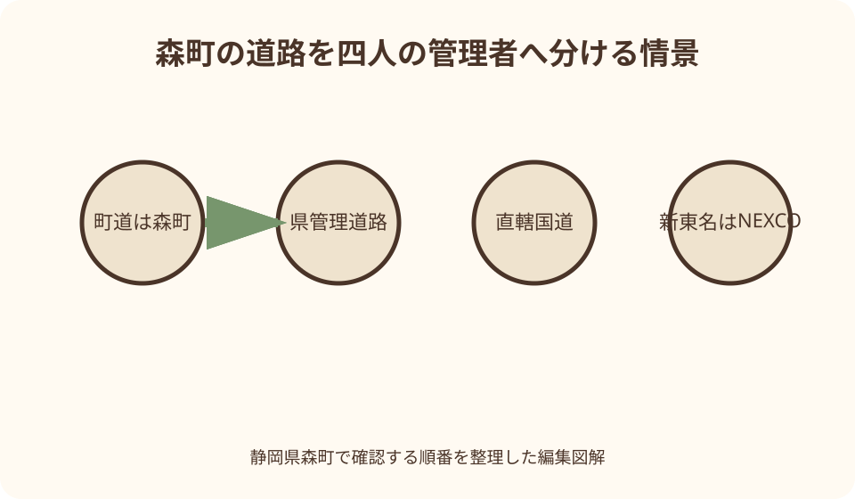
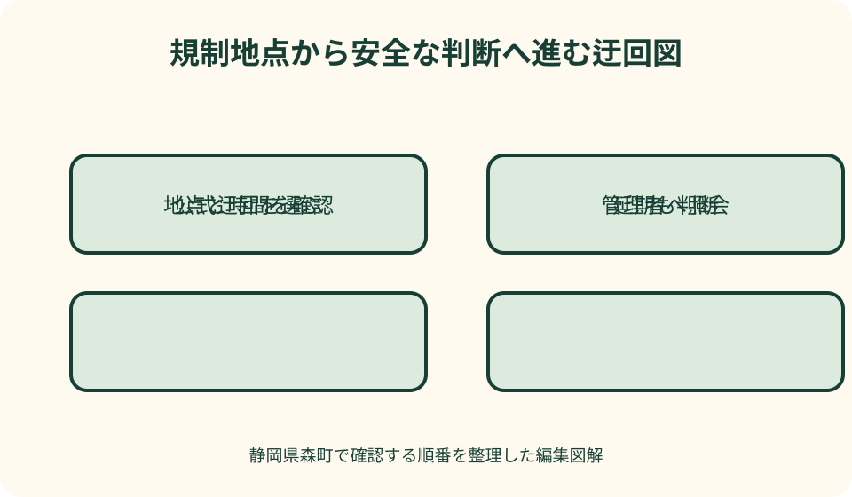

交通・外出・生活動線｜最終確認 2026-08-10
静岡県森町の道路工事・通行止め情報｜町道・県道・国道・高速を分ける
道路の通行止めを探すとき、森町内の地図を一枚見ただけでは足りません。町道は森町、県道や県が管理する国道は静岡県、国が直接管理する国道は国土交通省、高速道路はNEXCO中日本というように、管理者ごとに情報の入口が違うからです。さらに、予定された工事規制と、豪雨・倒木・崩土などによる急な規制では確認のタイミングも異なります。

編集イラスト道路規制確認の結論は管理者を分けること
道路工事や通行止めを見つける第一歩は、住所検索ではなく道路管理者の特定です。森町内という同じ地図上でも、町道、県道、国道、高速道路では発表主体が異なります。町の公式ページに見当たらないから規制なし、とは判断できません。
次に、規制の原因を分けます。工事予告は開始日、時間帯、予備日、規制方法が前もって示される場合があります。災害、事故、倒木、路肩崩落などは急に始まり、解除見込みが未定のことがあります。古い工事予定を見て当日も同じだと考えないようにします。
確認する地点は、路線名だけでなく、字名、交差点、橋、トンネル、IC、上下線や方向で絞ります。同じ県道でも規制区間の手前で曲がれるのか、目的地自体が規制区間内なのかで判断が変わります。地図のピン一つを全区間の状態とみなしません。
道路情報の一次確認日は2026年8月10日です。規制は掲載後にも開始、延長、解除、延期が起こり得ます。実際に通る日の前夜と出発直前、長距離移動なら休憩時にも公式情報を読み直してください。
出発地から目的地までの道路名を拾う
地図アプリで推奨ルートを出したら、主要な道路名、県道番号、国道番号、橋やトンネル、利用するICを紙へ抜き出します。アプリが表示する所要時間だけでは、どの管理者へ確認すべきか分かりません。
森町の町なかから山間部へ向かう道では、短い区間で県道から町道へ移ることがあります。一本道に見えても管理者が変わる可能性があるため、規制地点の前後にある交差点名や集落名を記録します。
遠州森町スマートICを使う場合は、新東名本線、スマートIC出入口、町道橘円田線、県道掛川天竜線など複数の道路を通ります。高速本線が通行可能でも、ICへの一般道が規制されていれば利用できません。逆もあります。
住所や施設名しか分からないときは、管理者へ『森町の○○付近』だけで尋ねず、地図の緯度経度、近くの橋、交差点、電柱や道路標識などを補助にします。現在地を道路上で安全に撮影できない場合は、停車してから地図を確認します。
町道は森町の管理窓口から確認する
町道の工事・通行規制は、静岡県の道路規制地図だけでは網羅できません。県のシステムは、市町が管理する道路の情報を提供していないと明記しています。町道の可能性がある区間は、森町の建設課管理係へ確認します。
森町公式には、道路占用、承認工事、道路通行規制・制限依頼に関する書類を案内するページがあります。これは工事を行う側の手続案内ですが、町道の管理窓口を特定する一次情報として使えます。通行者が規制申請書を出す必要があるという意味ではありません。
問い合わせでは、町道路線名が分かれば伝え、分からなければ所在地、起終点、近くの建物、通る日時、車種を示します。全面通行止め、時間帯規制、片側交互通行、大型車制限のどれかを確認し、歩行者・自転車も対象かを尋ねます。
町道の現地看板に工事名や施工者の連絡先がある場合でも、走行中に読んだ番号へその場で電話しません。安全な場所に停車し、看板の規制日時と公式窓口の案内を照合します。現場誘導員の指示があるときは従います。
県道と県管理国道は静岡県の規制情報で探す
静岡県道路通行規制情報提供システムは、県内の主な道路について、気象条件、工事、災害、事故などによる規制を検索できます。森町を市町別に選び、西部地域、道路名、管理者、規制原因を組み合わせて候補を絞ります。
県道だけでなく、県が管理する国道の規制が載る場合があります。『国道だから国土交通省』と番号だけで決めつけず、各規制詳細に表示される管理者を確認します。国道の管理区分は路線・区間で異なるためです。
規制一覧では、全面通行止め、時間帯通行止め、片側交互通行、車線規制、大型車通行止め、チェーン必要などの種別を見ます。普通車が通れるのか、自転車・歩行者も止められるのかは、詳細と現地指示を確認します。
県の地図上に線やピンがない道路でも、町道なら対象外です。また、すべての小規模規制が必ず表示されると保証されていません。目的地へ至る最後の町道は森町へ、県道区間は県の情報へ分けて確認します。
直轄国道は国土交通省の入口へ進む
国が直接管理する国道については、国土交通省中部地方整備局や静岡国道事務所の工事・通行規制情報を確認します。国のページから全国の道路情報、JARTIC、静岡県の規制情報へも案内されています。
森町から町外へ通勤・通院するときは、町内に規制がなくても、目的地までの国道で止まる可能性があります。袋井、掛川、磐田、浜松方面までルート全体を見て、町境で確認を終えないようにします。
直轄国道の規制を調べる際も、国道番号、上下・方向、起終点、規制開始時刻、解除見込みを読みます。国道の同じ番号が長い距離を続くため、『国道○号が通行止め』という見出しだけでは自分の区間への影響を決められません。
国の道路情報と県の地図が両方に同じ規制を示す場合もあります。二重に別件と数えず、管理者、区間、原因、更新時刻が一致するかを見ます。食い違う場合は新しい時刻の詳細を開き、管理者へ確認します。
新東名はNEXCOの工事予定と現在情報を分ける
新東名高速道路と遠州森町スマートICを利用する場合、高速道路の工事・通行止めはNEXCO中日本の情報を確認します。静岡県道路規制システムはNEXCO管理道路を提供対象外としているため、県の地図だけで新東名が通れるとは判断できません。
予定工事はNEXCO中日本の工事規制カレンダーや個別のお知らせで、区間、上下線、日時、予備日、車線規制、IC・PA閉鎖を確認します。工事日が荒天で延期される場合もあるため、前に保存した日程表を出発当日の答えにしません。
現在の通行止め、事故、渋滞は、NEXCO中日本が案内するiHighway中日本などのリアルタイム情報で確認します。工事予定ページと現在情報は用途が違います。予定にない事故や災害規制は当日情報で初めて分かります。
本線が通れても、利用予定のスマートICが閉鎖、一般道アクセスが規制、ETC設備に制限がある場合があります。森町公式のスマートIC位置と接続道路を確認し、NEXCO側のIC・PA情報も合わせます。
工事予告は期間・時間帯・予備日を読む
工事規制の案内では、開始日と終了日だけでなく、毎日規制するのか、平日の夜間だけか、作業しない日があるかを確認します。期間全体を終日通行止めだと思うと不要な迂回が増え、時間帯規制を見落とすと現地で止まります。
予備日は、工事が必ずその日に行われるという意味ではありません。天候や進捗により本日実施か延期かが変わるため、工事主体の当日発表を確認します。解除予定時刻も、作業状況で変わる可能性があります。
片側交互通行は通行可能でも待ち時間が生じます。通勤ピーク、通学送迎、大型車、バスの通過が重なると所要時間が伸びる可能性があります。規制の有無だけでなく、到着時刻に余裕を持たせます。
工事の案内に公式迂回路が示されているなら、車種、方向、対象期間を確かめて使います。普通車向けの狭い迂回路へ大型車が入れるとは限りません。ナビが出した最短路より、工事主体の案内と現地標識を優先します。

災害通行止めは予告なしを前提に再確認する
豪雨、土砂崩れ、倒木、路肩決壊、冠水、積雪などによる規制は、出発後にも始まります。前夜に異常がなくても、雨が続く日、河川水位が高い日、強風後は出発直前に県・町・NEXCOの情報を読み直します。
通行止めの解除は、雨が止んだ時刻と同じではありません。点検、土砂撤去、斜面・路面確認が必要になることがあります。解除見込みが示されていなければ、何時には通れるだろうと予想して規制地点へ向かいません。
森町の山間部では、一つの道路規制が通院、通学、配送、町営バスの運行に重なる可能性があります。道路情報だけでなく、利用するバスや施設の公式連絡も確認し、道路が開くまで予定先が待つとは考えないようにします。
現地で冠水、崩土、倒木を見つけたら、規制情報に載っていないから通れるとは判断しません。安全な場所へ戻り、緊急性に応じて警察、消防、道路管理者へ場所と状況を伝えます。車を降りて深さや斜面を確かめに行かないでください。
規制地図の地点と区間を読み違えない
静岡県の道路規制システムは、地図上の規制区間が目安で、実際の区間と必ずしも一致しない場合があると注意しています。地図の線だけを拡大して、自宅前まで通れる、規制端点から曲がれると決めません。
詳細画面で、路線名、規制箇所、起点・終点、原因、開始、終了予定、規制内容、管理者を読みます。地名が同じでも別の橋や枝道かもしれないため、目的地との位置関係を二つ以上の目印で確認します。
地図検索で森町を選んでも、町道とNEXCO道路は表示範囲外です。表示件数がゼロでも、町管理道路や新東名に規制がないという結論にはなりません。確認した管理者の欄をチェック表に残します。
家族へ位置を送るときは、スクリーンショットだけでなく規制詳細のURL、確認時刻、路線名、区間を添えます。地図画像は縮尺や方向が変わると別地点に見えるため、出発地から規制までの手前の交差点も共有します。
迂回路は通れることと使えることを分ける
通行規制を避ける道路が地図にあっても、自分の車で安全に通れるとは限りません。幅員、高さ、重量、急勾配、すれ違い、未舗装、冬季、農作業車の通行などを確認します。大型車やキャンピングカーは特に車両条件を見ます。
生活道路、農道、林道、私道をナビが短い迂回として示すことがあります。公式迂回に指定されていない狭い道へ交通が集中すると、住民生活と緊急車両に影響します。案内標識や管理者の推奨がない近道へ入らないことが基本です。
全面通行止めのバリケードを動かす、二輪や自転車なら通れると判断する、歩いて越えて反対側の車に乗る、といった行動は避けます。規制対象は車両だけか、歩行者も含むかを管理者へ確認し、現地指示に従います。
迂回で所要時間が大きく伸びるなら、到着先へ連絡し、時間変更、予約変更、公共交通、外出延期も比較します。通れる道を見つけることだけを目標にせず、帰路も同じ規制を避けられるかまで確認します。
外出前の確認表を五列で作る
一列目に道路名と管理者、二列目に規制地点、三列目に原因と規制種別、四列目に確認時刻と更新時刻、五列目に迂回・延期の判断を書きます。この形なら、県道情報だけ確認して町道を忘れる穴が見えます。
高速道路を使う日は、遠州森町スマートIC、森掛川IC、前後のJCT・IC、一般道アクセスを別行にします。本線の通行止めとIC閉鎖、アクセス道路の規制を一行へまとめません。
公共交通へ切り替える可能性があるなら、駅・停留所までの道路規制と、鉄道・バスの運行情報を別に記録します。道路が止まるとバスも影響を受ける場合があります。代案の交通が本当に動いているか、運行者公式で確認します。
確認表は前夜版と出発直前版を分け、変わった箇所に時刻を書きます。古い状態を消して上書きすると、家族が前夜の画像を見続ける可能性があります。『解除』『延長』『新規規制』の変化を明示します。
良い点
管理者別に確認する良さは、県の道路地図に表示されない町道やNEXCO道路を見落としにくいことです。一つの情報源に全道路を求めず、確認範囲の限界を理解して補えます。
工事予告と災害規制を分けると、前夜に準備できることと、当日やり直すことが明確になります。工事は時間帯・予備日・公式迂回、災害は開始・解除・現地状況を重点的に見られます。
路線名、規制区間、方向、時刻を家族で共有すれば、『あの道が止まっている』という曖昧な連絡を減らせます。送迎担当、勤務先、配送先が同じ詳細を見て、それぞれの到着判断を行えます。
外出延期を迂回と同じ表へ置くことで、何としても通れる道を探す行動を抑えられます。山間部や豪雨時は、狭い生活道路へ入るより、時間変更や用事の延期が合理的な場合があります。
注文したい点
県の道路規制システムは対象範囲を明記していますが、利用者は地図だけ見て町道も含むと受け止めやすいです。市町管理道路とNEXCO道路の確認先を地図画面からさらに目立つ形で案内すると、見落としが減ります。
森町公式には町道の管理窓口や規制依頼書がありますが、一般利用者向けに現在の町道通行止めを一覧で探せる入口は分かりにくい場合があります。災害時と工事時の更新先を一画面で示すと実用性が高まります。
地図上の規制区間が目安である以上、詳細の起終点、交差点名、現地標識が重要です。利用者側も、線の端を見て通過可否を決めず、管理者へ地点を伝える習慣が必要です。
迂回路の案内は普通車向けか大型車向けか、生活道路への流入を避けるかまで読みたい情報です。案内がない場合にナビ任せで近道へ入らず、時間変更や外出延期を現実的な代案として残します。
情報が食い違うときの確認順
地図アプリでは通れるのに公式情報は通行止めの場合、ナビの経路を優先しません。公式詳細の更新時刻、規制区間、現地標識を確認し、地図サービスへの反映遅れを前提にします。
県の情報と町からの案内が違う場合は、道路管理者と対象区間を比べます。隣接する県道と町道で別の規制を伝えている可能性があります。同じ地名だから矛盾していると決めつけず、起終点を照合します。
SNSの写真や投稿は現場の様子を知る補助になりますが、撮影時刻、方向、解除後かが分からないことがあります。拡散数ではなく、管理者公式の更新と現地規制を判断の土台にします。
解除情報が出た後も、アクセス道路、バス運行、目的地の営業が戻っているとは限りません。道路の解除と用事の再開を別に確認します。解除直後の交通集中も見込み、出発時刻を調整します。
代案・結論
規制が分かったときの候補は、公式迂回、時間変更、目的地変更、公共交通、外出延期です。最短距離ではなく、管理者が案内する通行条件、天候、車種、帰路を満たす案から選びます。
迂回路が見つからない、管理者が分からない、地図と現地が違う場合は、規制地点へ進んで確かめるのではなく出発を止めます。路線名と地点を整理し、森町、静岡県、国、NEXCOの該当窓口へ確認します。
通勤・通院・配送の時刻に間に合わない場合は、道路原因、現在地、到着見込み、次に確認する時刻を相手へ伝えます。迂回中に運転者が操作せず、同乗者か安全な停車場所で連絡します。
結論は、一枚の道路地図で終わらせず、町道・県管理道路・直轄国道・高速道路の四行を確認することです。工事予告は前夜、災害・事故規制は出発直前に更新し、通れないときは公式迂回または延期を選びます。

家族に残す道路カルテ
自宅から主要目的地までのカルテには、普段の道路名、管理者、橋・トンネル、代替となる幹線道路を記します。私道や農道を『抜け道』として登録せず、公式に通行可能な経路だけを候補にします。
山間部の実家や農地へ向かう道は、最後の県道から分かれる町道、ゲート、幅員、すれ違い場所、携帯電話の通じにくい区間を家族で確認します。規制時に初めて狭い別道を探さないためです。
カルテには、森町の町道窓口、静岡県道路規制情報、国土交通省、NEXCO中日本の公式リンクを載せます。電話番号は変更を考え、定期的に公式ページから更新します。
通行止めを経験したら、発生日、原因、使えた代案、家族連絡、解除確認を追記します。過去の迂回が次回も使えるとは限りませんが、どの管理者へ何を聞くかを早く思い出せます。
大石の視点
私は、不動産の立地を見るとき、敷地が公道に接しているかだけでなく、日常的に使う道路が一方向しかないか、災害時に別経路があるかまで確認したいと考えます。通行規制は暮らしの弱点を具体的に示すからです。
森町の山間部では、距離が短くても斜面、河川、橋、狭い道路が生活動線に影響します。晴天の昼に一度走った印象だけでなく、雨後、通学時間、大型車とのすれ違いを想定して道路管理者と経路を記録します。
物件の販売図面にある所要時間は、工事・災害規制や迂回を含みません。移住や実家利用を考える家族には、病院、学校、勤務先、買物先へ二つの経路があるか、規制情報をどこで得るかを確認してほしいです。
通行止めが起きたからすぐ売る、という結論へ進む必要はありません。まず道路の管理者、復旧見込み、代替動線、家族送迎、維持管理の負担を整理します。その記録が、住み続ける、利用頻度を下げる、貸す、売るの比較材料になります。
出発直前の七項目
一つ目に、県の規制地図で森町と通過市町を検索します。二つ目に、町道区間を森町の発信や窓口で確認します。三つ目に、国道の管理者と国の道路情報を見ます。
四つ目に、新東名を使うならNEXCO中日本の現在情報と工事予定を確認します。五つ目に、規制詳細の区間、方向、時刻、規制種別を地図と照合します。
六つ目に、公式迂回路と車種条件、帰路を確認します。七つ目に、勤務先、学校、病院、家族へ連絡が必要になった場合の文面を用意します。確認できない項目があれば『規制なし』ではなく『未確認』です。
運転開始後はスマートフォンを操作せず、休憩施設や安全な駐車場所で更新します。同乗者に確認を頼む場合も、画面だけで現地標識を無視しないよう、路線名と区間を読み上げてもらいます。
管理者へ伝える質問
町道については、地点、通過予定時刻、車種を伝え、『全面か時間帯か』『歩行者・自転車も対象か』『公式迂回はあるか』『解除や延長はどこで確認するか』を尋ねます。
県道・県管理国道については、規制システムの番号や路線名、起終点を示し、『地図の区間はどこからどこまでか』『大型車条件はあるか』『翌日以降の予定は変わっていないか』を確認します。
直轄国道と高速道路では、方向、IC・JCT、上下線、通過予定時刻を伝えます。IC閉鎖、PA閉鎖、本線規制を分け、一般道への公式迂回と最新情報の更新先を尋ねます。
どの管理者にも、規制を解除してほしいという要望より、現在の通行条件を正確に聞くことを優先します。現場の復旧見込みを記事や家族の推測で補わず、未定なら予定変更へ切り替えます。
まとめ
森町の道路工事・通行止めは、町道、県道・県管理国道、直轄国道、新東名を管理者別に確認します。静岡県の規制地図だけでは、市町管理道路とNEXCO道路を確認できません。
工事規制は期間、時間帯、予備日、車線・車種、公式迂回を読みます。災害規制は急に始まり、解除も点検後になるため、前夜の情報を出発当日まで固定しません。
地図上の規制区間は目安です。路線名、起終点、方向、交差点、更新時刻を詳細画面で確認し、現地標識や誘導に従います。生活道路、農道、林道、私道を自己流の迂回に使わないでください。
最初の一歩は、普段のルートを管理者別に四行へ分け、各公式ページを保存することです。出発直前に全行を更新し、通行条件が確かめられなければ迂回探しを続けず、時間変更または外出延期を選びます。
公式情報・確認先
掲載内容は次の一次情報を基礎に整理しました。営業、料金、催し、交通は変わるため、出発前または手続き前にリンク先で最新情報を確認してください。
- 申請書（道路占用・承認工事・道路通行規制等）（静岡県森町、2026-08-10確認）
- 新東名 遠州森町スマートIC（静岡県森町、2026-08-10確認）
- 森町防災ハザードマップ（静岡県森町、2026-08-10確認）
- 静岡県道路通行規制情報提供システム（静岡県、2026-08-10確認）
- 道路情報・工事・通行規制情報（国土交通省中部地方整備局 静岡国道事務所、2026-08-10確認）
- 工事情報お役立ちサイト（NEXCO中日本、2026-08-10確認）
- 工事規制カレンダー（NEXCO中日本、2026-08-10確認）